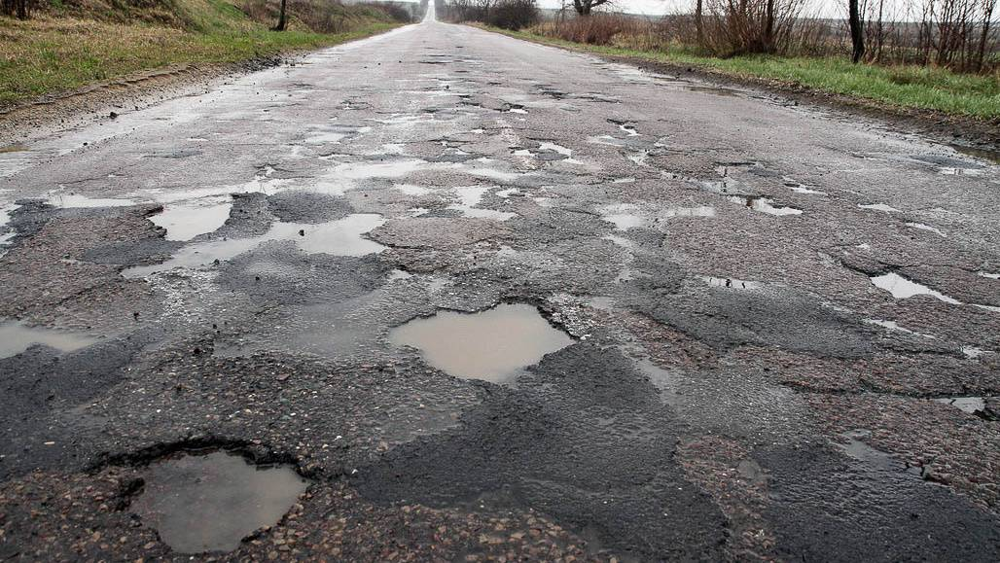

Tömegközlekedés működése
A buszközlekedés rugalmasság és elérhetőség
A busz az egyik leggyakoribb tömegközlekedési forma, amelynek legnagyobb előnye a rugalmasság. Mivel közúton halad, nem igényel külön infrastruktúrát, mint például síneket vagy alagutakat. Ez lehetővé teszi, hogy a város legkülönfélébb pontjait is kiszolgálja, beleértve a külvárosi területeket is. A modern buszok gyakran alacsonypadlósak, klímával felszereltek, sőt egyre több helyen elektromos vagy hibrid meghajtásúak, így környezetbarátabbak, mint korábban.
Ugyanakkor a buszok legnagyobb hátránya éppen az, hogy a közúti forgalomnak alárendelten közlekednek. Ez dugók esetén jelentős késéseket okozhat. Emellett, ha nem áll rendelkezésre buszsáv, akkor a menetidő kiszámíthatatlanná válhat. A csúcsidőszakban gyakori a zsúfoltság, ami rontja az utazási élményt.
Magyarország autópályái/autóútjai is szörnyű állapotban vannak, míg nem mindegyik, a régebbi, vagy jobban megterhelt utak (Pl.: M0) tele van kátyúval, és akár befejezetlen útrészekkel. Ez lelassíthatja a már eleve lassú tömegközlekedést, hiszen a buszvezetőnek még a gödrök kerülésére is figyelni kell, és akár még defektet is kaphat. Ez a helyzet nyílvánvalóan a személyautókat is érinti, de ebben az esetben talán még rosszabb, hiszen egy nagyobb kátyú könnyen tönkreteheti egy kisebb gépjármű szerkezetét. Összességében a magyar utak sivár helyzetben vannak és még sok mindent kell fejleszteni rajta.
Szerinted hogyan lehetne fejleszteni a magyar utak minőségét?